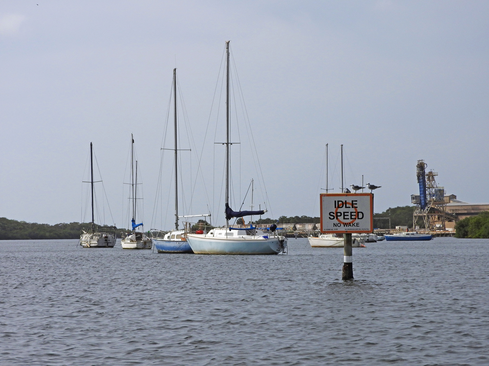

Pleasure | Commercial | Total | ||||
|---|---|---|---|---|---|---|
2016 | 2022 | 2016 | 2022 | 2016 | 2022 | |
Hillsborough | 39910 | 41671 | 744 | 659 | 40782 | 42330 |
Manatee | 17662 | 25713 | 714 | 751 | 18527 | 26464 |
Pasco | 23643 | 29629 | 406 | 484 | 24136 | 30113 |
Pinellas | 48029 | 53657 | 1211 | 1094 | 49754 | 54751 |
Totals | 129244 | 150670 | 3075 | 2988 | 133199 | 153658 |
PH-5
Reduce pollution from recreational boaters
OBJECTIVES:
Continue to promote marina, boatyard and boater education and best practices. Increase availability of sewage pumpout stations and mobile pumpout vessels. Encourage creation of appropriately sited mooring fields near sewage pumpout facilities or services. Encourage enforcement of rules prohibiting sewage discharges, especially for liveaboards and unmaintained vessels outside of marinas or mooring fields. Survey and identify problem areas for unregulated liveaboards. Support state and local programs to remove derelict vessels.
STATUS:
Moved from Action WQ-2 and revised to focus on waste management issues associated with recreational boats.
BACKGROUND:
Pollution resulting from improper boating practices includes sewage discharges, release of toxic chemicals, oil and fuel spills, stormwater runoff from marinas and boatyards, abandoned and derelict vessels, marine debris and discarded monofilament line or other fishing gear. This action focuses on the need for additional sewage pumpout services for marinas, identification and management of liveaboards, removal of derelict vessels and continued education about clean boating practices for boaters, marinas and mooring fields. Other boating impacts (such as handling of waste and monofilament line, and safe operation in manatee and seagrass areas) are addressed elsewhere in the CCMP (see Actions PE-1, PA-1, BH-3 and FW-1).

More than 150,000 boats are registered in Hillsborough, Manatee, Pasco and Pinellas Counties, according to the Florida Department of Highway Safety and Motor Vehicles. The number of registered vessels in the Tampa Bay area grew by fifteen percent between 2016 and 2022 with Manatee County registrations increasing by forty-three percent. Pinellas County ranked second and Hillsborough County fifth in number of registered boats statewide in 2022. The vast majority of these boats are 16 to 26 feet long. The popularity of recreational boating highlights the need for baywide adoption of responsible boating practices to protect water quality, human health and aquatic habitats.
The Florida Department of Environmental Protection (FDEP) promotes clean boating practices through a variety of programs, including the Clean Marina Program, Clean Boatyard Program, Clean Marine Retailer Program and Clean Boater Program. These voluntary recognition and designation programs provide no-cost assistance to marinas and boatyards in implementing Best Management Practices to protect sensitive habitats, manage waste and stormwater, prevent spills and prepare for emergencies. There are 45 designated Clean Marinas or Clean Boatyards in the Tampa Bay region.
Discharging raw sewage into waterways threatens environmental and human health. The Clean Vessel Act of 1992 prohibits discharge of sewage into Florida’s inland and offshore waters extending nine miles out into the Gulf of Mexico. Boaters must legally store sewage generated onboard using an approved treatment device or holding tank and use an authorized waste dump receptacle, pumpout facility or pumpout vessel to permanently dispose of waste when in port.
Permits for new marinas and mooring fields, or renovations to existing ones, do not automatically require pumpout facilities or pumpout vessels. They are typically required, however, if the proposed marina or mooring field includes slips for liveaboards, or there are water quality issues in the area. Clean Marinas are encouraged, but not required, to provide pumpout facilities. As of summer 2017, pumpout facilities are available at 55 marinas in the four coastal counties of Tampa Bay, and 26 of these are Clean Marinas.
The Clean Vessel Act established a grant program administered by the U.S. Fish and Wildlife Service, which provides funding for purchase, installation, maintenance, repair and operation of boater pumpout and dump stations. The City of Clearwater purchased a pumpout vessel with Clean Vessel Act funding and provides mobile pumpout services one day a week. Facilities receiving funding from the Act must make pumpout services available to the public for free, or for a nominal charge. As of December 2015, the Act has prevented more than 20 million gallons of sewage from contaminating Florida waterways.

Increasing access to authorized waste disposal receptacles and pumpout facilities and improving boater understanding about the legal, environmental and human health consequences of illegal sewage discharges are important strategies to reduce sewage pollution from recreational boaters.
Special attention is required to identify and address illegal sewage discharges from liveaboards and unmaintained vessels outside of regulated marinas and mooring fields. A unified, shared spatial database of liveaboards or unmaintained boats across the Tampa Bay Area is needed to better understand the distribution and abundance of these vessels in the area and to prioritize management actions (e.g., enforcement, relocation to marinas, creation of regulated mooring fields or additional pump out vessels to service these locations) at local trouble spots. Enforcement action is hampered by difficulties in catching violators in the act. Trouble spots may include areas around Hurricane Hole, Terra Ceia, Williams Park Boat Ramp, Clearwater Memorial Causeway and Davis Island Boat Ramp. Increasing the availability or capacity of appropriately sited mooring fields may reduce illegal sewage discharges by aggregating boats in managed areas with adjacent or mobile pumpout services.
Abandoned and derelict vessels can cause environmental damage by physically impacting sensitive marine and coastal habitats (see Action BH-4) or by discharging sewage, oil, toxic chemicals and marine debris.

Vessels can be classified by law enforcement as “derelict” if they are “left, stored, or abandoned in a wrecked, junked, or substantially dismantled condition upon any public waters of this state, at any port in this state without the consent of the agency having jurisdiction thereof, or docked or grounded at or beached upon the property of another without the consent of the owner of the property.” Severe storms, such as hurricanes, are often a catalyst for the creation of additional derelict vessels.
Note
Florida law defines a vessel at risk of becoming derelict as:
- One that is taking on or has taken on water without an effective means to get the water out;
- One with spaces that are designed to be enclosed but are incapable of being sealed off or remain open to the elements for extended periods of time;
- One that has broken loose or is in danger of breaking loose from its anchor;
- One that is left or stored aground unattended in such a condition to prevent the vessel from getting underway, or;
- One that is listing due to water intrusion, or is sunk or partially sunk.
It is unlawful in Florida to store, leave or abandon any derelict vessel in state waters. The Florida Fish and Wildlife Conservation Commission (FWC) or any law enforcement agency can relocate or remove any derelict vessel in the state and the vessel owner is liable for all costs. However, the time between initial identification of a derelict vessel and its eventual removal can be a long and drawn-out process, and removal is costly. In 2021, the Legislature passed a new law that empowers law enforcement to take action on at-risk vessels. For 2022, the Florida Legislature allocated $8.3 million for derelict vessel removal statewide. Hillsborough County owns its own salvage equipment for derelict vessel removal. Pinellas pays a per-foot removal fee to a contracted marine salvage company, with costs covered by the county’s share of boat registration fees.
The FWC’s At-Risk Vessel Program allows law enforcement agents to identify vessels at risk of becoming derelict, before they become a problem. Law enforcement officers can tag these vessels and issue violation notices to owners who refuse to improve a vessel’s seaworthiness and secure mooring or storage. At-risk vessels are tracked in a statewide database.